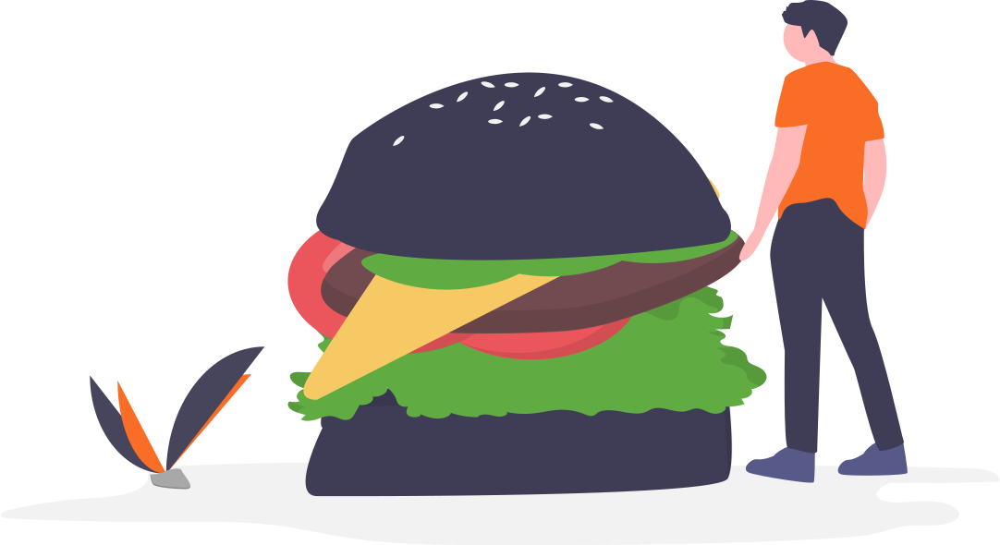
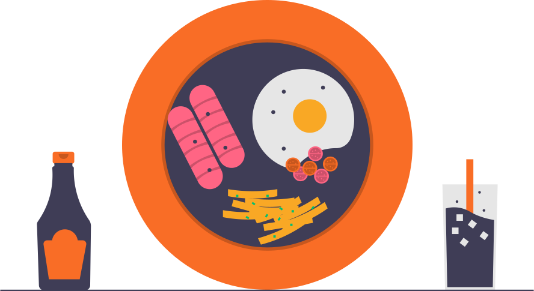
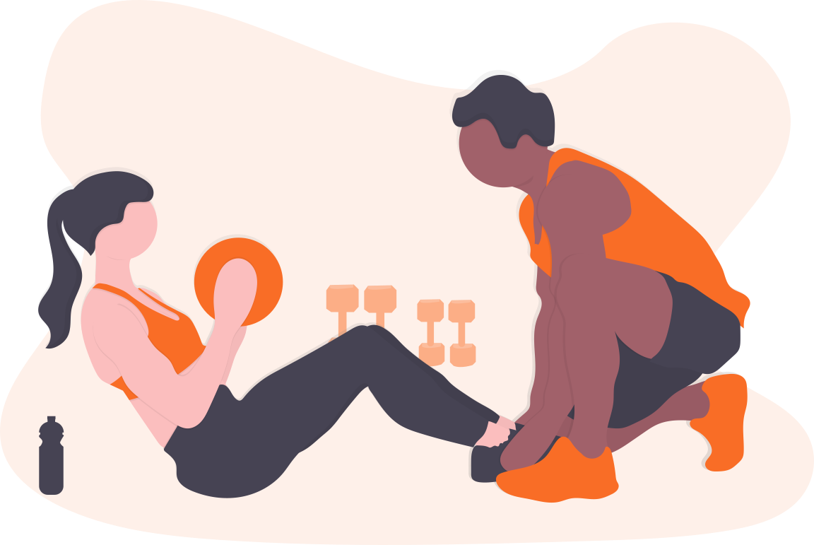

t's quite common to hear that calories don't matter and calorie counting is a waste of time. However, when it comes to your weight, calories do count. This is a fact that has been proven time and time again in scientific experiments called
overfeeding studies. These studies ask people to deliberately overeat and subsequently measure the impact on their weight and health. All overfeeding studies have found that, when people eat more calories than they burn off, they gain
weight (1Trusted Source, 2Trusted Source, 3Trusted Source, 4Trusted Source, 5Trusted Source, 6Trusted Source, 7Trusted Source, 8Trusted Source). This simple fact means that counting calories and limiting your intake can be effective
to prevent weight gain or lose weight, as long as you manage to stick to it. One review found that weight loss programs that included calorie counting led to an average of around 7 lbs (3.3 kg) more weight loss than those that didn't
(9Trusted Source).
How to drink more Water
We need water to survive, but drinking enough to get by isn’t ideal for your body. Water is required to cushion and lubricate your joints, protect your brain and other internal tissues, regulate your body temperature, and remove waste
from your body through urination, bowel movements, and perspiration. When you don’t have enough water, dehydration comes out to play. When you’re dehydrated you’ll experience dry mouth, low blood pressure, headaches, dizziness, dry
skin, and worst of all, fatigue.Men need a little more because they tend to be larger on average and naturally have a little more muscle mass—which holds water better than fatty tissues. Of course, pregnant women and nursing mothers
need more water as well. If that seems like a ton of water to you, that’s a bad sign.Not only do you have to remember to drink it, but you also have a lot of other tasty beverages out there competing to make their way inside of you.
While a soda or sports drink may sound thirst-quenching, the sugar and other extras aren’t going to do you any favors—and they might even make you more thirsty. If you can help it, stick to water. But if you really want a different
beverage, at least drink water in addition to it. Remember, water is the cheapest drink out there!
Alcohol and Fitness
Drinking alcohol as a regular pattern can negatively affect your performance in the gym, when you play sports, and in everyday life. Alcohol is a sedative that slows down functioning. It weakens hand-eye coordination, impairs judgement,
and slows down reaction time. When you are active, no matter what you are doing, all of these functions are imperative to keep up the pace and efficiently be aware of your surroundings. Playing any sport requires top-notch attention
due to the fast pace and quick reaction time needed to win. Alcohol impairs your ability to perform at your highest level, costing you the game, or ending your workout early.

Why we need to eat more Fiber
Eat more fiber. You've probably heard it before. But do you know why fiber is so good for your health? Dietary fiber — found mainly in fruits, vegetables, whole grains and legumes — is probably best known for its ability to prevent or relieve constipation.
But foods containing fiber can provide other health benefits as well, such as helping to maintain a healthy weight and lowering your risk of diabetes, heart disease and some types of cancer. Selecting tasty foods that provide fiber
isn't difficult. Find out how much dietary fiber you need, the foods that contain it, and how to add them to meals and snacks.

What to eat after ending a fast
Every fast has to be exited properly so as not to negate its positive effects on the body and mind. For maximum results the rule of thumb is to double the time of the fast and end it gracefully, gradually introducing food back into your
system. This will prime the body, help you re-seed it with nutrients and also prevent weight gain that often follows any caloric restrictive regimen. So, for example, if you fasted for two days then you should take four days to recover.
However tempting it is to reach for a burger or two, choose your food wisely and take your time readjusting - you will be glad you did! After fasting we have a brand-new immune system, our body has reset and is ready to get all the
nutrients it’s been missing. What we should focus on is fiber, plant based protein and healthy fats. This will ensure we start with a good base and it’ll help us replenish what we’ve lost.

Training or Empty
Ask your body to run away from a zombie horde, lift heavy weights or jump over a collapsing bridge and your muscles kick into high gear and respond. This instant response is made possible because there is glycogen stored in the muscles
that can be broken down through a process called glycolysis to produce pyruvate which is then converted into Adenosine Triphosphate (ATP), carbon dioxide and water. ATP is what powers the muscles.These are muscles that are great at
helping you get away from the brain-eating zombies and taking action that helps you survive in an emergency but they cannot continue to power your workout past the first few minutes.

Start Snacking
Making something easy or accessible (or not) is how you change your snacking habits. We snack more and we snack more often because it’s easy and because it’s convenient, we snack before a meal, afterwards and sometimes instead. We snack
all day and it very soon becomes a habit to snack and grab something we can crunch on all day long. With a few smart modifications we can change that.If you want a bag of crisps you will have to come out and buy some. By making it
inconvenient you are likely to not bother and either snack on something healthy or not snack at all - at the very least you will get a walk out of it.
Top Vegetarian protien Sources
If you're a vegetarian you need to provide your body with foods that contain the essential amino acids that are used as building blocks of protein in the body. Every time you eat food of any kind your body breaks it down into three basic
groups: A) Useful stuff B) Energy C) Waste. Useful stuff are foods which contain vitamins and the amino acids the body needs in order to create more complex molecules which then form what everyone sees: like hair, skin, eyes, muscle
and so on. Energy comes from foods which contain either sugar or fat and depending on your body’s energy needs some of it will be used up immediately while the rest will be stored for later. Waste is everything your body cannot use
or process and everyone knows what happens to waste.
.svg)